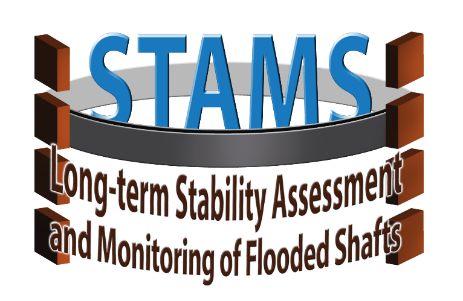

Introduction¶
What is STAMS GUI?¶
STAMS GUI is the user inteface used with all the devices from STAMS project (see STAMS website.).
It will allow easier manoeuvre of the different devices, and convenient visualization of the sensor readings.
Which devices does STAMS GUI integrate?¶
Different devices need to be monitorized during their deployment. This User Interface will provide a different interface for each of them.
Below, there is a table with the different devices integrated with the GUI, the sensor input to be visualized and the control commands that the user will be allowed to send. Additionnally, the developing state of the GUI for each device is indicated
| Device | Visualization tools | Control Commands | Developing state |
|---|---|---|---|
Reference Point
Installation Module
|
Camera
Pose
|
Teleoperation/ Autonomous
(6 DOF)
|
On develop |
Profiling and
Collision Avoidance
Sub-module
|
Profiler Scan
Distance to obstacle
|
UP/DOWN
|
On develop |
Multi Functional
Monitoring Module
|
Cameras (3)
Pose
|
UP/DOWN
|
On develop |
Window Definition¶
The main aspect for the GUI development, is creating the window that contains all the controllers and visualizers. Each of them needs a callback function that reads the data input or sends the command.

Current aspect of the UI, in this case visualizing the RPIM GUI in teleoperated mode.
-
class
rov_ui.Window[source]¶ Window class inherits from QtGui.QWidget class. In this class the UI for the different hardware devices is created
Attributes:
-
lblgui¶ lblgui is the text that labels the scene selection combo box
lblnav is the text that labels the Navigation mode combo box
-
guimode¶ is the combo box that chooses between simulator o real device
navmode is the combo box that chooses between teleoperated or autonomous navigation
-
jb¶ joystick button instance from pyqtgraph
-
jthread¶ joystick thread instance
-
btnLEFT¶ navigation button which moves the ROV to the left
-
btnRGT¶ navigation button which moves the ROV to the right
-
btnUP¶ navigation button which moves the ROV up
-
btnDOWN¶ navigation button which moves the ROV down
-
imgwin¶ instance of GraphicsLayoutWidget from pyqtgraph to show images
-
win¶ instance of GLViewWidget where a GLScatterPlotItem will be added to show the trajectory
-
btnDOWN_clicked()[source]¶ This function is executed when moving down button is clicked It publishes the required values in the thrusters to move down
-
btnLEFT_clicked()[source]¶ This function is executed when moving left button is clicked It publishes the required values in the thrusters to move left
-
btnRGT_clicked()[source]¶ This function is executed when moving right button is clicked It publishes the required values in the thrusters to move right
-
btnUP_clicked()[source]¶ This function is executed when moving UP button is clicked It publishes the required values in the thrusters to move up
-
initUI()[source]¶ initUI method initializes the widgets from the UI window, and connects the different signals with the slots.
-
joystick_changed()[source]¶ This function unlocs the joystick thread, allowing it to update the joystick commands as the ROV thrusther’s value
-
update_image()[source]¶ Every time a new image topic arrives, it is updated in the gui widget with this function
-
update_joystick()[source]¶ This function updates the joystick values and sends them to the ROV’s thrusters
-
Image processing¶
The camera data is sent through a ROS topic with the sensor_msgs/Image format, so it is necessary
to convert it to a matrix format to make it readable from an external module like it is the case
of the GUI. This is done via Opencv using CvBridge

conversion from ROS Image message to OpenCV matrix (see ROS wiki).
-
class
rov_ui.image_converter[source]¶ The image_converter class contains methods to subscribe to an image topic, convert it from sensor_msgs to cv image, and emit a signal to update the gui window.
Attributes:
Pose information¶
The pose information is very important to collect as it is used for stamping of the different measurements with the pose info. The pose information comes from the Geo-Referencing Sub-module.

Example of pose information used for 3D displaying of the device’s trajectory
-
class
rov_ui.pose_subscriber[source]¶ The pose_subscriber class contains methods to subscribe to the Pose topic , read the messages and save them in a float variable and in a string variable.
Attributes:
-
newstring¶ Signal used for drawing a new string read from topic in a PlainText
-
newscatter¶ Signal used for drawing a new pose point in a 3D scatter plot
-
pose_world_frame¶ float variable which stores the x,y,z coordinates of the robot pose
-
datastring¶ string variable which stores the x coordinate of the robot pose
-
datainput¶
this variables is used for writing or drawing a new pose message only when it differs from the previous one
-
GUI Joystick and Navigation Buttons¶
Although the AUV is meant to be autonomous or operated with a joystick, an additional joystick has beed added to the GUI for those cases when the AUV needs to be teleoperated but there is not a physical joystick available.

Joystick and buttons from the GUI for teleoperation of the AUV. The joystick allows to move the AUV in front, left and right directions. The UP/DOWN buttons move the AUV up and down in the Z axis. The other two buttons rotate the AUV in anti-clockwise and clockwise directions
-
class
rov_ui.Joystick_thread[source]¶ Joystick_thread class creates a thread apart that updates the joystick measurement every certain time
Attributes:
-
signal¶
signal that is emitted to call the slot which updates the velocity commands
-
mutex¶
this mutex only controls the access of the joystick of the buttons to write over the ROV commands
-
is_locked¶
this variable controls that the joystick is not writing over the ROV a the same time the buttons are being pressed
-